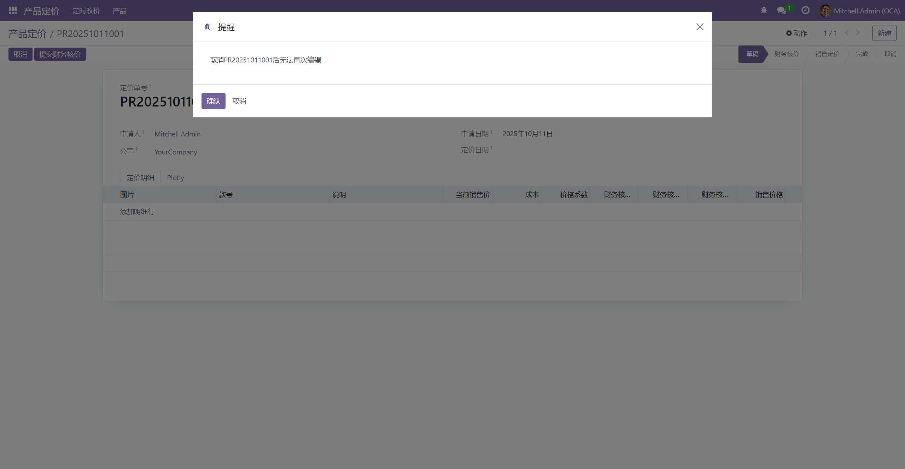

弹窗提醒
2025-10-11
通过写一个瞬态模型达到实现弹窗提醒的功能，点击确认继续执行，点击取消撤回该操作。
参考代码链接：Module/lc_tip_dialog · LC_Link/document - 码云 - 开源中国 (gitee.com)
创建
弹窗模块lc_tip_dialog
可以写在需要弹窗功能的模块下面，也可写成公共模块
目录结构
├─security
│ └─ir.model.access.csv
│
├─wizard
│ └─__init__.py
│ └─tips_dialog.py
│ └─tips_dialog.xml
│
├─__init__.py
│
└─__manifest__.py
编辑tips_dialog.py瞬态模型
from odoo import models, fields
class TipsDialog(models.TransientModel):
_name = 'lc.tips.dialog'
_description = '提示弹窗'
title = fields.Char(string='Title')
content = fields.Html(string='Content')
res_model = fields.Char(string='Resource Model')
res_ids = fields.Char(string='Resource IDs')
context = fields.Char(string='Context')
ok_func = fields.Char(string='Ok Function')
no_func = fields.Char(string='No Function')
def eval(self, func):
self.ensure_one()
if self.res_model and self.res_ids and func:
res = self.env[self.res_model].browse(eval(self.res_ids))
if res and res.__getattribute__(func):
if self.context:
res = res.with_context(eval(self.context))
return res.__getattribute__(func)()
def action_ok(self):
result = self.eval(self.ok_func)
return result
def action_no(self):
result = self.eval(self.no_func)
return result
def tips(self, params=None):
if params is None:
params = {}
context = dict(self.env.context)
context.update(eval(params.get('context', '{}')))
params.update({'context': context})
res = self.sudo().create(params)
action = self.sudo().env.ref('lc_tip_dialog.lc_tips_dialog_action').read()[0]
action.update({
'name': res.title,
'res_id': res.id
})
return action
def tips_basic(self, title='提醒', content='', ok_func=''):
return self.env['lc.tips.dialog'].tips({
'title': title,
'content': content,
'ok_func': ok_func
})
编辑tips_dialog.xml弹窗视图
<odoo>
<record id="lc_tips_dialog" model="ir.ui.view">
<field name="name">Tips</field>
<field name="model">lc.tips.dialog</field>
<field name="arch" type="xml">
<form create="false" edit="false" delete="false" duplicate="false">
<sheet>
<field name="title" invisible="1"/>
<field name="res_model" invisible="1"/>
<field name="res_ids" invisible="1"/>
<field name="context" invisible="1"/>
<field name="ok_func" invisible="1"/>
<field name="no_func" invisible="1"/>
<field name="content" nolabel="1"/>
</sheet>
<footer>
<button name="action_ok" string="确认" type="object" class="btn-primary"
attrs="{'invisible':[('ok_func','=',False)]}"/>
<button name="action_no" string="取消" type="object" class="btn-secondary"
attrs="{'invisible':[('no_func','=',False)]}"/>
<button special="cancel" string="取消" class="btn-secondary"
attrs="{'invisible':['|',('ok_func','!=',False),('no_func','!=',False)]}"/>
</footer>
</form>
</field>
</record>
<record id="lc_tips_dialog_action" model="ir.actions.act_window">
<field name="name">Tips</field>
<field name="res_model">lc.tips.dialog</field>
<field name="view_mode">form</field>
<field name="target">new</field>
</record>
</odoo>
添加ir.model.access.csv权限
id,name,model_id:id,group_id:id,perm_read,perm_write,perm_create,perm_unlink
act_tips_dialog,tips_dialog,model_lc_tips_dialog,,1,1,1,1
在manifest.py引入tips_dialog.xml
'data': [
'security/ir.model.access.csv',
'wizard/tips_dialog.xml'
],
使用
在使用弹窗的模块manifest.py依赖弹窗模块
'depends': ['base','lc_tip_dialog'],
在需要弹窗的按钮动作使用对应弹窗
def action_cancel(self):
self.ensure_one()
return self.env['lc.tips.dialog'].tips({
'title': '提醒',
'content': f"取消{','.join(self.mapped('name'))}后无法再次编辑",
'res_model': self._name,
'res_ids': self.ids,
'ok_func': '_action_cancel',
'no_func': ''
})
def _action_cancel(self):
if self.state == 'confirmed':
raise UserError("已确定的定价不能取消")
self.state = 'cancel'state = 'cancel'
效果
